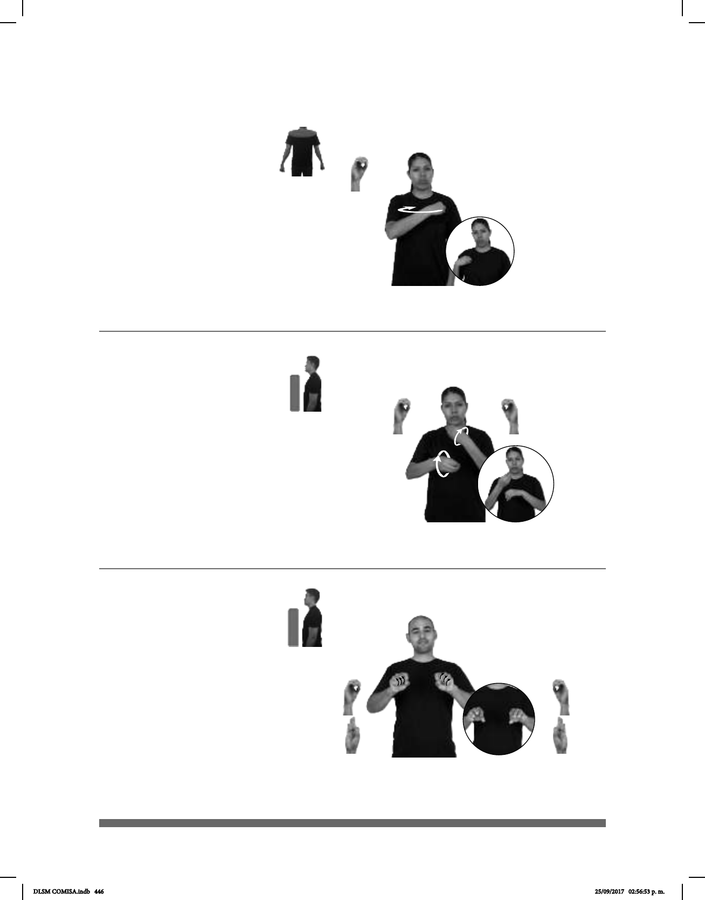

446
Seña: SM
O.1
Palma hacia adentro.
Sobre el pecho, del lado
izquierdo al lado derecho.
Movimiento: La mano simula un salto.
Rotación de cabeza,
labios protuidos.
1. v. tr. Hacer que alguien haga
algo o se comporte de cierta manera
recurriendo para ello a la autoridad o a la
fuerza. 2. sust. f. Hecho de tener alguien
que actuar o comportarse de cierta manera
porque algo o alguien se lo impone, lo exige
con autoridad o por la fuerza.
(B) (O-55)
IMPUESTOS PAGAR pos-TUYO OBLIGACIÓN
Es tu obligación pagar impuestos.
Seña: SB
MD y MB O.1
MD y MB palmas
hacia adentro.
MD y MB a la altura
del pecho.
Movimiento: MD y MB se mueven
formando círculos hacia enfrente
alternadamente.
sust. f. Forma
literaria constituida por diálogos
entre personajes que se representa
en un escenario.
(O-56)
OBRA TEATRO
allá
DIVERTIDO
La obra de teatro estuvo divertida.
Seña: SS
Seña que pasa de
Palmas hacia abajo.
: A la altura del pecho.
Movimiento: Los dedos medio,
anular y meñique se extienden.
sust. f. Lugar de
trabajo en el que se realizan actividades
administrativas y de atención al
público, o donde se ofrece algún
servicio profesional.
JEFE SIEMPRE DENTRO OFICINA MISMO++ SALIR NUNCA
(O-57)
DLSM COMISA.indb 446 25/09/2017 02:56:53 p. m.